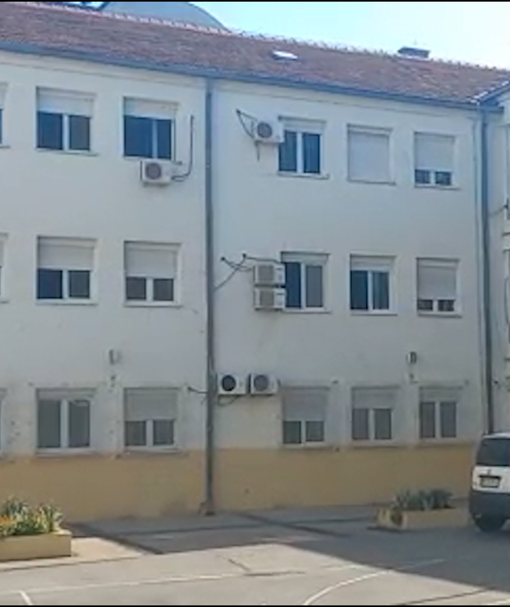
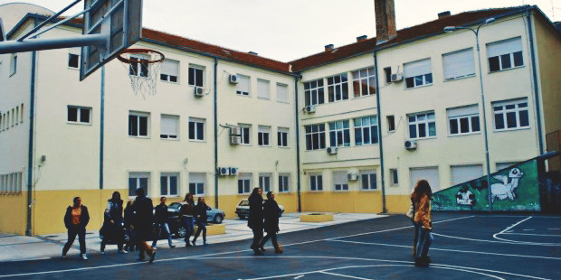

XIV београдска гимназија једна је од најстаријих и најугледнијих образовних установа у главном граду. Основана је 1961. године и већ више од шест деценија представља симбол квалитетног средњошколског образовања, модерних наставних метода и изузетних успеха својих ученика. Током година, школа је изградила препознатљив идентитет који спаја традицију и савремене образовне тенденције.
Наставни програм XIV београдске гимназије усмерен је ка развоју критичког мишљења, креативности и одговорности ученика. У оквиру природно-математичког и друштвено-језичког смера, ученици стичу знања и вештине које их припремају за најзахтевније факултете и изазове савременог друштва. Школа посебну пажњу посвећује индивидуалном развоју ученика, подстичући их на активно учешће у настави, секцијама и такмичењима.
Поред наставних активности, гимназија негује богат ваннаставни живот. Ученици редовно учествују у хуманитарним акцијама, културним манифестацијама, спортским турнирима и еколошким пројектима. На тај начин школа не само да образује, већ и васпитава младе људе који ће сутра бити активни и одговорни грађани.
XIV београдска гимназија поноси се својим професорима који, својим знањем и посвећеношћу, представљају највећи ресурс школе. Њихов рад и подршка ученицима доприносе томе да школа сваке године изнедри генерације успешних младих људи — будућих академика, уметника, лекара, инжењера и научника.
Са дугом традицијом, модерним приступом настави и духом заједништва, XIV београдска гимназија остаје једна од водећих школа у Београду, препознатљива по својим вредностима, успесима и генерацијама које остављају трајан траг у друштву.
Адреса: Господара Вучића 64, 11000 Београд
Телефон факс: 011/3086-920 Телефон(зборница): 011/3444-295
Е-пошта: xivgimnazija@beograd.edu.rs
Смерови: природно-математички и друштвено-језички
Језик наставе: српски
Директор: Марија Милетић, дипл.математичар
Матични број: 700432
Година оснивања: 1961.
Број ученика: око 1000
Број одељења: 32
Настава у сменама: преподневна и поподневна
Надморска висина: 135 метара
